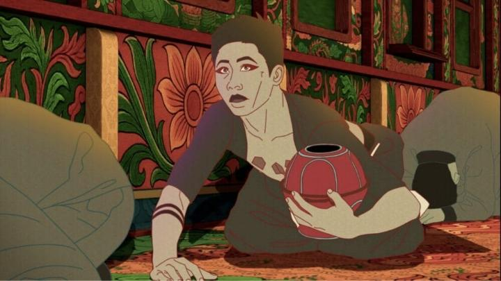
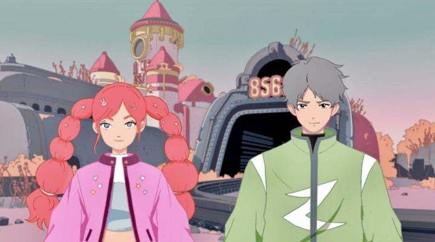

"Bliss - Beyond the Edge of Time" is a distinctly Taiwanese anthology of six sci-fi themed shorts. The themes, and mediums, vary (ranging from full CGI, 2D, and even live-action). Each one is very different and stand-alone, so I'll review them separately below."Whispers in the Void" is about two women living alone on a drifting spaceship - one a human, slowly becoming resentful of being alone aside from the second, an android. The story is ultimately a sweet one of love and sacrifice, and is a satisfying, if somewhat plain, sci-fi story. It's fully CGI, and the quality of it makes it look as if it had the highest production values, but again it's safe, comparable to recent big-budget Chinese feature animation, which in turn was inspired by Disney and Pixar. There's also a lot of the two girls in their underwear... fanservice isn't too overwhelming in "Bliss," but it does pop up a few times. "The Last Faith" is comparably the most experimental both in story and style. Without much explanation at first, we follow a lone man who finds himself lost on a train run by a religious cult, each train car stranger than the last. That story is likely inspired by "Snowpiercer," and has a similarly satisfying twist as to why he's on the train. A hybrid of CGI and 2D animation (with rotoscoping) is applied here, and there's wild use of colour and pattern. More interesting is the heavy use of what I assume is costumes and dance borrowed from real cultural fascets - I'm ignorant of the culture and history, so these felt appropriately alien to me, to the strength of the film. It's experimental and abstract, which might turn off some viewers, but I think this was my favourite of the collection."The Ship of Thesus" uses a more stylized CGI approach to tell a fractured story across different spaces in time. As the world is at the verge of the human race willingly uploading their consciousness to a digital network, leaving their physical bodies (and the Earth as a whole) behind, a father and ex-employee of the tech company involved is one of the last human holdouts. The story-telling style is a bit of a mixed bag, as is what it's trying to say (the father's case to avoid all robot-body augmentation and digital mind transfer isn't fully justified within the short), but there is some confident direction and work here - the final shot (black, with sound only) is perfect."The Poacher" is a action comedy about a peaceful futuristic petting zoo, discovering a nearly-instinct baby leopard, and dealing with a renegade group of protestors trying to free their animals from captivity. Fully 2D, this is the most anime-like in character designs and animation. It's not quite up to snuff though... it reminds me of the cutscenes in games like "Harvest Moon" or "Rune Factory," outsourced to companies cheap enough to get the job, so the characters kinda float along the ground, for example. But it's close enough, and this is the most fun short of the set, with a great ironic-comedy ending as the punchline.

"Re-Soul" uses both live-action and, when in the digital world, CGI. A wife brings a comatose husband to a monk to revive him - the husband is logged into a VR world and hasn't come out in days. After the ritual struggles, the wife and monk enter the digital world to discover the evil root preventing his return. There's a compelling twist to the backstory of the couple, even though it almost feels like a daytime TV drama in the hightened emoitional portrayal. But it's interesting enough, aside from a somewhat weak ending.Finally, "Paradise Lost" is another 2D animation, again similar to Japanese anime in style. It's a low-fi-style road trip of two teenagers on one last date before the end of the world. It's a sweet romance to end on, and it's the colour palette, music, and vibes that make this memorable. The variety in styles and stories, with science fiction being the only shared thread, reminded me of "The Animatrix," still one of the most successful animated anthologies in my mind. Indeed, fans of "The Animatrix" will enjoy "Bliss - Beyond the Edge of Time." Unfortunately, having the shorts be so fully independent is a flaw. Imagine if there was a connecting thread... each seem to take place at a different era of humanity's decline / evolution with technology. What if the film frames things to say there were all on the same shared timeline, with brief references or easter eggs of one short occuring in the history of another? That sort of thing might have been the final ingredient to make "Bliss" truly special. I saw this at Fantasia Film Festival in 2026. As usual, there was a lot of Japanese anime on the schedule, almost all of which had sold out screenings. By comparison, it was a shame to see only about half the attendance to "Bliss," despite the strong overlap in styles and interests. The Western obsession with "cool Japan" strikes again, and those people are missing out. "Bliss - Beyond the Edge of Time" is a refreshing anthology of shorts. Even though sci-fi isn't my go-to genre, and even though I wasn't quite "wow'd" by anything, the diversity more than justifies a ticket. - "Ani" More reviews can be found at : https://2danicritic.github.io/ Previous review: review_Blind_Willow,_Sleeping_Woman Next review: review_Blood-C_-_The_Last_Dark